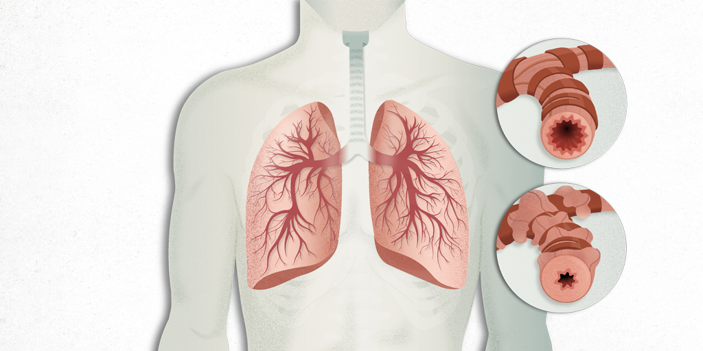

Asma
Descripción

El asma es una afección crónica (a largo plazo) que afecta las vías respiratorias en los pulmones. Estas vías son conductos que transportan el aire para permitir su ingreso y egreso de los pulmones. Si se tiene asma, en ocasiones las vías respiratorias pueden inflamarse y estrecharse, dificultando el flujo del aire al exhalar.
Síntomas
- Tos
- Sibilancias (silbidos respiratorios)
- Dificultad respiratoria
- Opresión en el pecho
Tratamiento
Broncodilatadores, antiinflamatorios controladores y otros medicamentos según indicación médica.